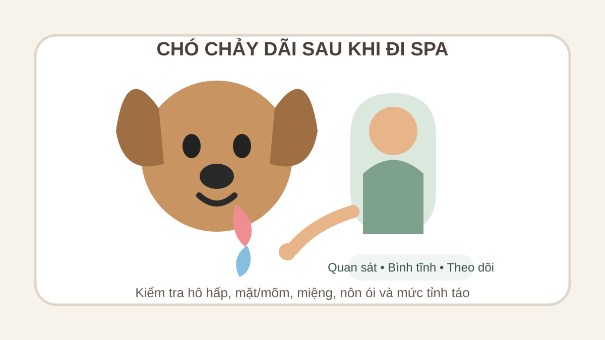

Chó chảy dãi sau khi đi Spa: khi nào cần lo?
Trả lời nhanh: chó chảy dãi sau khi đi Spa có thể chỉ là phản ứng thoáng qua do phấn khích, căng thẳng, buồn nôn hoặc say xe trên đường về. Tuy nhiên, chảy dãi nhiều bất thường kèm khó thở, sưng mặt/mõm, nôn liên tục, co giật, ngã quỵ, đau miệng rõ hoặc nghi nuốt phải hóa chất/dị vật cần được bác sĩ thú y đánh giá sớm, thậm chí cấp cứu. Đừng mặc định Spa là nguyên nhân chỉ vì hai việc xảy ra gần nhau.

Đầu tiên: chảy dãi ít hay nhiều, kéo dài bao lâu?
Một ít nước dãi xuất hiện khi chó vừa trải qua nhiều kích thích có thể tự hết khi bé về nơi quen thuộc và bình tĩnh. Điều đáng quan tâm hơn là lượng dãi tăng rõ so với bình thường, chảy thành dòng, có bọt liên tục, bé nuốt khó, cào miệng, liếm mép dồn dập hoặc biểu hiện toàn thân khác.
VCA Animal Hospitals lưu ý chảy dãi quá mức có nhiều nguyên nhân: buồn nôn, dị vật trong miệng, bệnh răng miệng, tổn thương, chất gây kích ứng, vấn đề tiêu hóa và cả kích động. Merck Veterinary Manual cũng liệt kê say xe, sợ hãi, căng thẳng và kích thích trong nhóm nguyên nhân có thể gây tăng tiết nước bọt. Vì vậy, thời điểm “sau Spa” chưa đủ để xác định nguyên nhân.
5 nhóm nguyên nhân có thể gặp sau một buổi Spa
1. Căng thẳng hoặc phấn khích
Môi trường lạ, tiếng máy sấy, thao tác grooming, gặp người hoặc thú cưng khác có thể khiến một số chó kích động. VCA ghi nhận một số chó chảy dãi khi phấn khích hoặc bị kích động. Nếu bé nhanh chóng thư giãn, hô hấp bình thường và lượng dãi giảm dần, có thể tiếp tục theo dõi.
2. Say xe hoặc buồn nôn trên đường về
Nếu chó thường liếm mép, bồn chồn, chảy dãi hoặc nôn khi đi xe, hãy nghĩ đến say xe. Merck mô tả say xe ở chó có thể gây buồn nôn, chảy dãi nhiều, nôn và đôi khi giảm ăn trong vài giờ sau chuyến đi. Điều này đặc biệt quan trọng khi triệu chứng bắt đầu trên xe hoặc ngay sau khi về nhà.
3. Khó chịu trong miệng
Dị vật nhỏ, tổn thương niêm mạc, vấn đề răng lợi hoặc đau miệng đều có thể làm chó chảy dãi. Nếu bé cào mặt, nhai lệch, làm rơi thức ăn, không muốn ăn hoặc phản ứng đau khi chạm vùng mõm, nên ưu tiên kiểm tra thú y thay vì cố banh miệng sâu tại nhà.
4. Kích ứng hoặc nuốt phải chất không phù hợp
Chất gây kích ứng trong miệng có thể làm tăng tiết nước bọt. Nếu bạn nghi chó đã liếm hoặc nuốt một sản phẩm không dành để ăn, hãy giữ lại tên sản phẩm/bao bì và liên hệ bác sĩ thú y. Không tự gây nôn nếu chưa được hướng dẫn.
5. Phản ứng dị ứng hoặc vấn đề sức khỏe trùng thời điểm
Chảy dãi có thể xuất hiện cùng nhiều tình trạng khác. VCA lưu ý phản vệ ở chó có thể đi kèm chảy dãi, nôn, tiêu chảy; trường hợp nặng có thể khó thở và tím niêm mạc. Nếu chảy dãi đi cùng sưng mặt hoặc mõm, hãy đánh giá mức độ khẩn cấp thay vì chỉ theo dõi nước dãi.
Checklist 6 điểm có thể quan sát tại nhà
1. Hô hấp
Chó có thở bình thường không? Nếu thở khó, thở gắng sức, tím lưỡi/nướu hoặc không thể nằm yên vì khó thở, đây không còn là tình huống theo dõi tại nhà. Xem thêm hướng dẫn chó thở gấp sau khi đi Spa.
2. Mặt và mõm
Quan sát xem có sưng quanh mắt, môi hoặc mõm, nổi mề đay hay đỏ da lan nhanh không. Sưng tiến triển cùng khó thở cần được xử lý khẩn cấp.
3. Miệng
Nếu chó hợp tác, chỉ nhìn phần dễ thấy: môi, lợi, lưỡi và phía trước miệng. Không đưa tay sâu vào họng và không cố kéo vật đang cắm sâu. Dị vật thực quản có thể gây chảy dãi đột ngột, ọe, trớ và nuốt liên tục.
4. Nôn, tiêu chảy và khả năng uống nước
Chảy dãi có thể báo trước buồn nôn. Nếu chó nôn, xem thêm bài chó nôn sau khi đi Spa. Nôn lặp lại, mệt rõ hoặc không giữ được nước cần được bác sĩ thú y đánh giá.
5. Hành vi và mức tỉnh táo
Chó vẫn nhận biết, đi lại và phản ứng như thường lệ hay đang lừ đừ, mất thăng bằng, run, co giật hoặc ngã quỵ? Những thay đổi thần kinh hoặc collapse là dấu hiệu khẩn cấp.
6. Diễn tiến theo thời gian
Ghi lại lúc bắt đầu, lượng dãi tăng hay giảm, có liên quan chuyến xe, ăn uống hoặc một sự kiện cụ thể không. Video ngắn có thể hữu ích khi trao đổi với bác sĩ thú y.
Nên làm gì khi chó đang chảy dãi?
Đưa bé về nơi yên tĩnh, thoáng và cho nghỉ. Có thể lau nhẹ phần dãi quanh mép để da không ẩm kéo dài. Cho tiếp cận nước sạch theo thói quen bình thường nếu bé tỉnh táo và nuốt bình thường; không ép uống hoặc đổ nước vào miệng.
Nếu nghi say xe, ghi lại biểu hiện để trao đổi với bác sĩ thú y trước những chuyến đi sau. Nếu nghi sản phẩm hoặc chất lạ, giữ lại nhãn/bao bì. Nếu miệng đau hoặc có vật lạ, không cố thao tác mạnh vì chó đau có thể cắn và việc kéo sai cách có thể làm tổn thương nặng hơn.
Khi nào cần bác sĩ thú y ngay?
Ưu tiên cấp cứu nếu chó có khó thở, tím lưỡi/nướu, sưng mặt/mõm tăng nhanh, co giật, ngã quỵ, giảm tỉnh táo rõ, nghi ngộ độc hoặc nuốt hóa chất. VCA coi poisoning là tình huống cấp cứu và khuyến nghị liên hệ bác sĩ thú y ngay khi nghi thú cưng nuốt chất đáng ngờ.
Nên khám sớm nếu chảy dãi đột ngột và nhiều, không giảm, kèm đau miệng, khó nuốt, ọe/trớ, nôn lặp lại, bỏ ăn hoặc có dấu hiệu dị vật. Merck lưu ý dị vật thực quản có thể gây chảy dãi đột ngột, gagging, regurgitation và cố nuốt nhiều lần.
Chảy dãi sau Spa có phòng tránh được không?
Không phải mọi trường hợp đều phòng được vì nguyên nhân rất đa dạng. Nếu chó dễ stress, hãy báo trước khi đặt lịch Spa về phản ứng với người lạ, tiếng máy sấy và việc giữ chân/mặt. Nếu chó hay say xe, trao đổi với bác sĩ thú y về kế hoạch làm quen xe hoặc biện pháp phù hợp trước chuyến đi.
Với nhu cầu tắm, vệ sinh và grooming định kỳ, bạn có thể xem Spa thú cưng Bình Thạnh, dịch vụ Grooming và bảng giá Spa. Khi đặt lịch, hãy cung cấp tiền sử dị ứng, say xe, bệnh nền, thuốc đang dùng và các phản ứng bất thường từng gặp.
Câu hỏi thường gặp
Chó chảy dãi sau khi đi Spa có phải do shampoo?
Không thể kết luận chỉ từ thời điểm. Chảy dãi có thể liên quan stress, buồn nôn, say xe, vấn đề miệng, chất kích ứng hoặc bệnh lý khác. Nếu nghi chó liếm/nuốt sản phẩm, hãy giữ thông tin sản phẩm và liên hệ bác sĩ thú y.
Chó chảy dãi nhưng vẫn ăn uống bình thường thì sao?
Nếu lượng dãi ít, giảm dần và chó hoàn toàn bình thường, có thể theo dõi sát. Nếu chảy dãi nhiều hơn bình thường, kéo dài hoặc tái diễn, nên hỏi bác sĩ thú y để tìm nguyên nhân.
Chảy dãi và liếm mép có phải buồn nôn?
Có thể. VCA và Merck đều mô tả chảy dãi/liếm mép trong bối cảnh buồn nôn hoặc say xe, nhưng đây không phải dấu hiệu đặc hiệu duy nhất.
Chảy dãi kèm sưng mặt có nguy hiểm không?
Có thể là dấu hiệu phản ứng dị ứng. Nếu sưng tăng nhanh, kèm khó thở, yếu hoặc tím niêm mạc, cần cấp cứu thú y.
Bài liên quan
- Chó sưng mặt sau khi đi Spa: khi nào cần đi thú y?
- Chó nôn sau khi đi Spa: nguyên nhân và dấu hiệu cần lưu ý
- Chó thở gấp sau khi đi Spa: khi nào cần lo?
Cần đặt lịch Spa/Grooming cho bé?
Hãy báo trước các phản ứng đặc biệt, tiền sử dị ứng, say xe hoặc bệnh nền để việc tiếp nhận rõ ràng hơn.
Nội dung nhằm mục đích cung cấp thông tin chăm sóc chung, không thay thế chẩn đoán hoặc điều trị của bác sĩ thú y.